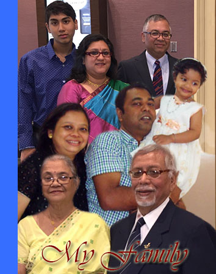

Our family settled down in North Guwahati, Kamrup and produced many illustratious persons including Anaundram Borooah, (fifth Indian ICS), Dr. Bhubaneswar Barooah, Iswar Prasad Barooah, Amrit Baruah and Ishan Baruah (Artist) and many others. Siba Prasad Barooah was my father and Kirtiram Barooah was the grandfather.
I was born in Nowgong on June 7th 1940 yet my official birth day was taken as First July 1942, as per practice of those days.This was the date when formal education was initiated at home. The name of my mother was Progywati. She has the greatest influence on my persona throughout my life. Another lady who has contributed greatly in my life is Utpala, my wife.
We had four uncles who are great in their respective field. One was Judge, another a Doctor and two were Monks. One of the Monk uncles later stayed with us and he opened up our spiritual world. I have two brothers, Atanu and Abhijit, along with their wives, Prarthana and Anjana respectively, are excellent human being.Atanu has been a body builder turned sought after marketing genious.The younger one has been a banker. My sisters, Arunima and Chapakali are full of earthly wisdom and help full to all around them. Arunima was prize winning educationist of repute and Chapakali is known for large heart of compassion. My maternal uncles were humble but were persons of high intellect. Humility was their virtue. Ratnakanta, Aswini, Ganesh, (Borkakotis) were well known. Two of my mother’s cousins were celebrated poets and intellectuals. They were Debakanta and Nabakanta Barua. We all grew up under their influence.
Santanu and Sharmila are our son and daughter. They are happily married with Smita and Samir respectively. Siddhartha Barua, alias Sidu is our grandson and Samaira our only granddaughter so far. Sidu is 11 years now and is in class six in 2011. He is learning swimming, painting and Karate.Samaira alias TUKI is seven month old as on October 2011. I have three nephews,Sanjay,Satyaki & Satyajit and three nieces, Sanjukta, Saswati and Sanjeevani. They are my relations by blood. But my actual family is large enough to include my soulmates that inspire, help and empower me even now. They are without face and without a name. I feel them all around me all the time. I draw their support whenever necessary.
